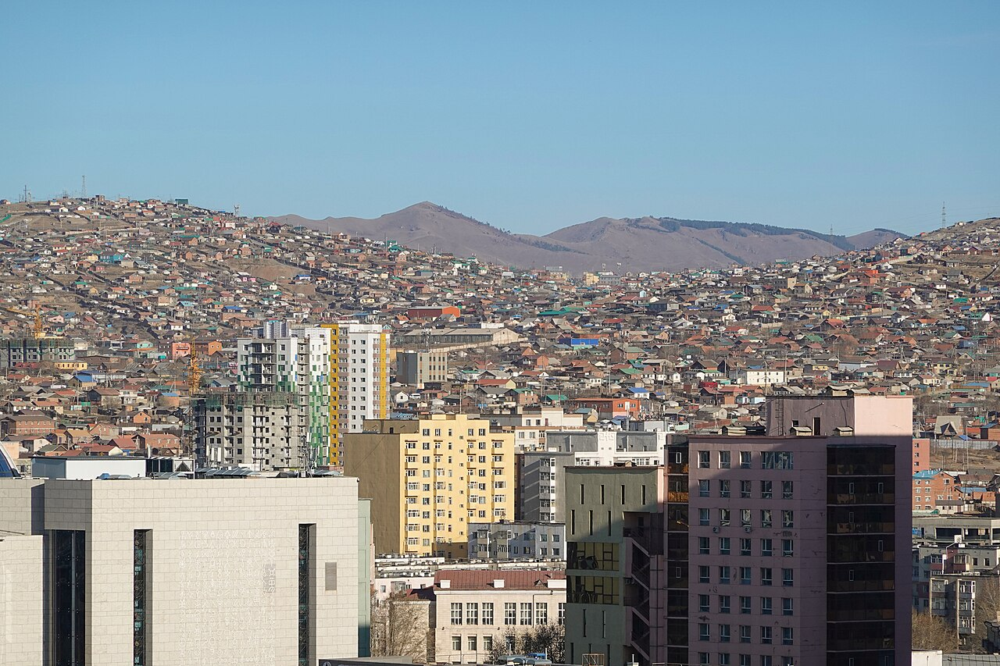

Source: ADB/EBRD/IFC ger-area project documents; Center for Health Development, Mongolia Health Indicators 2024; author estimate applying the commonly reported 60 percent ger-area share for 2024. Indicator IDs: ger-area population estimates, Ulaanbaatar population. Unit: Thousand persons.
The chart treats ger-area population as an urban pressure indicator rather than an exact census series. It shows that Ulaanbaatar's total population continued to rise, while the ger-area population remained on the order of hundreds of thousands and likely exceeded one million by 2024 if the commonly reported 60 percent share is applied. This is why heating, water, sanitation, roads, schools, clinics, and land regularization must be planned as city-scale systems rather than temporary settlement measures.
Source: World Bank WDI, Mongolia country code MNG. Indicator IDs: EN.ATM.PM25.MC.M3, SH.STA.AIRP.P5. Unit: Micrograms per cubic meter and deaths per 100,000.
Air pollution is an environmental, health, and urban-governance indicator at the same time. For Mongolia, PM2.5 exposure and air-pollution mortality reveal how heating systems, ger districts, energy poverty, and city planning become public-health costs.
- PM2.5 air pollution, mean annual exposure (micrograms per cubic meter) rose from 19.91 in 1990 to 29.65 in 2020.
Source: UNICEF Mongolia, Mongolia's Air Pollution Crisis: A Call to Action to Protect Children's Health. Indicator IDs: PM2.5 exposure, respiratory infections, fetal deaths, child lung function. Unit: Times, ratio, or percent as labeled.
These indicators are not the same unit, so the chart should be read as a stress dashboard rather than a single index. Together they show why ger-district air pollution is a public-health problem: extreme PM2.5 exposure is associated with respiratory disease, child lung-function loss, and pregnancy-related risk, making heating and housing policy part of health policy.
